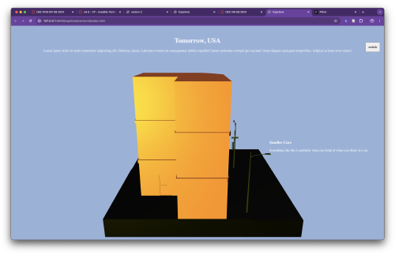

I user tested with Clarissa and gained some important insights. I noticed three important things.
Firstly, Clarissa had observed how the model spins around the y-axis and assumed that she needed to scroll to the left or right to continue with the page. It took a moment for her to scroll down, which triggers the model to spin and the text to move. To solve this, I plan to put text saying 'scroll down to experience' or an animated down arrow under the title to indicate to users how they should navigate.
Secondly, Clarissa pointed out how the text was hard to read at times. This is because the CSS is partially unfinished, I'm using the default font for now and the text can partially overlap with the model as the user scrolls. To remedy this, I plan to use a more legible and simple sans serif font and some sort of background around the text to create a card. Clarissa recommended even theming the backgrounds to look like a ticket or receipt, which I am considering.
Thirdly, I noticed that Clarissa clicked the 'switch' button to look at the speculative design version of the page after scrolling through the existing design version of the page, which I wanted. She voiced later that she wasn't sure what the button should do, which isn't what I wanted. I plan to create a 3D model that looks like a street sign or one way sign to indicate to users that they are going to 'Tomorrow' or 'Today'.
